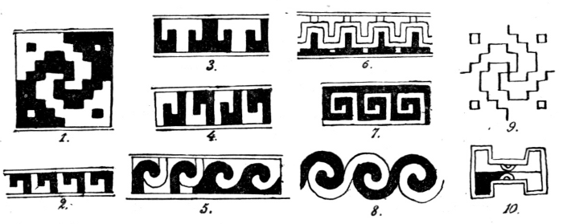

Figure 40 from The fundamental principles of Old and New World civilizations : a comparative research based on a study of the Ancient Mexican religious, sociological and calendrical systems by Zelia Nuttall:
